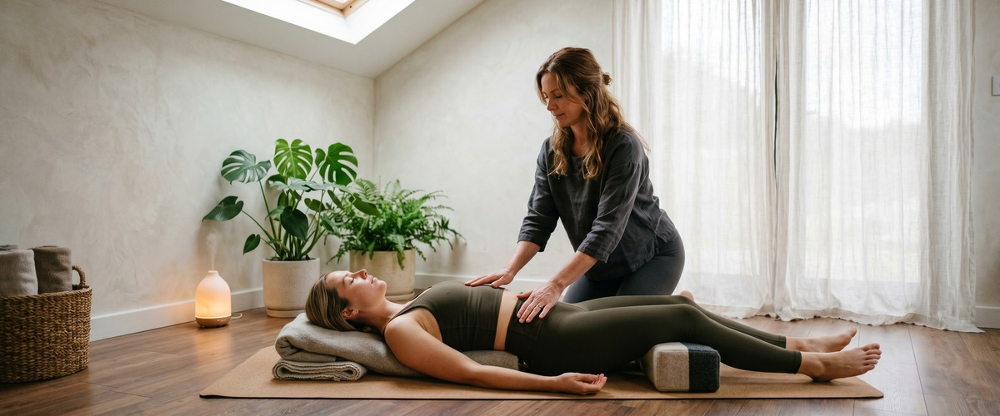

If your lower back has been quietly complaining since Monday morning and you keep telling yourself you'll do something about it later, this video is the nudge you need.

Adriene Mishler's Yoga For Lower Back Pain cuts through the noise of generic stretch routines and gives you a grounded, accessible practice built around genuine relief. Whether you're a Glasgow office worker whose chair has become your enemy, a runner dealing with post-training tightness, or someone who woke up stiff for the third morning in a row, these yoga poses for back pain relief meet you exactly where you are.
If you spend most of your day sitting, your hip and lower back muscles are likely tight and overworked. This video targets that pattern directly. It moves through poses that take pressure off the lower spine and gently restore movement to the hips and pelvis. Watch how Adriene cues the pelvic tilt and the cat-cow sequence. These are not decorative warm-ups. They are the exact movements that undo the strain your lower back builds up across a full working week.
Tight hamstrings and weak glutes are common causes of lower back pain in runners. This practice works on both. The floor-based stretches in the second half of the video are especially useful before bed. They calm the nervous system while easing the hip and lower back tension that can disrupt sleep.
Pairing a regular yoga practice with deep tissue or sports massage creates a lasting effect. It helps you hold on to the gains you make, rather than waiting for pain to return before acting. Book your session today and keep the momentum going.
Yoga is a powerful tool for managing lower back discomfort. But sometimes the body needs more than movement alone. If these yoga poses for back pain relief help but the tension keeps coming back, a Thai massage session at our Glasgow city centre studio can take things further. Traditional Thai massage combines assisted stretching with targeted pressure along the body's sen lines. It works on the same areas this video addresses, but with a trained pair of hands guiding the release.
Gentle yoga, like the practice in this video, is safe to do daily for most people. The key is to stay within a range that feels comfortable and avoid pushing through sharp or shooting pain. If your symptoms are linked to a condition such as a disc prolapse or sciatica, check with your GP or physiotherapist before starting any new routine.
Stop the pose and return to a neutral position, such as lying flat with your knees bent. Not every pose suits every body, and back conditions vary from person to person. If pain continues after stopping, seek a professional assessment rather than pushing through.
A good approach is to use yoga for daily upkeep and massage for deeper, less frequent work. Many clients at Glasgow Thai Massage find that a session every two to four weeks, alongside a regular home practice, stops lower back tension from building back up. Your therapist can help you find a rhythm that works for you.
Yes. Traditional Thai massage uses assisted stretching and acupressure along the body's energy lines. It releases tension in the lower back, hips, and hamstrings — the same areas this video targets. A therapist can apply precise pressure and guide your body into positions that are hard to reach on your own. The two approaches work well together as part of a longer-term back care routine. Get in touch to book your appointment and see what a difference it makes.